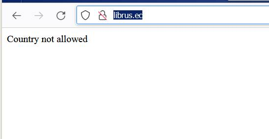

Доброго времени суток! рокси АнтиЗапрет перестал обеспечивать доступ к сайту библиотеки ЛибРесЕк ( http://librus.ec/ ). При попытке попасть на сайт выскакивает заглушка: «Country not allowed».

Поскольку с такой фигнёй столкнулся впервые, хотелось бы уточнить можно это как-то обойти?
И сопутствующая просьба, можно ли включить в реестр поддерживаемых АнтиЗапретом сайтов следующий IP-адрес: http://209.42.197.180/ (это одно из последних зеркал ЛибРусЕка, забаненное РКН буквально на днях)?
• Тип настройки: PAC-файл.
• Тип проблемы: не удаётся получить доступ к сайту ЛибРесЕка.
• Операционная система: Windows 7 Максимальная (официальная купленная версия).
• Используемый браузер: Firefox (Антизапрет подключён ссылкой на его прокси в настройках браузера).
• Провайдер: Эр-Телеком (Дом.ру).
Это сам сайт блокирует наши прокси сервера (по стране).
Напишите им в администрацию и передайте эту ссылку: AntiZapret Proxy.
В реестре нет, ходите напрямую, поэтому «Country not allowed». Это точно ЛибРусЕк?
Попробуйте http://lib.rus.ec/
Огромное спасибо! Лопухнулся. Заходил последние месяцы на зеркало http://209.42.197.180/ , а когда его заблокировали, похоже, неправильно набрал основной адрес библиотеки. Не уверен, что http://librus.ec/ – это ЛибРусЕк, точнее, сейчас уже почти уверен, что это какой-то левый адрес. По адресу http://lib.rus.ec/ всё нормально. ЛибРусЕк работает и АнтиЗапрет на него доступ обеспечивает.
Прошу извинить за необоснованную панику (настолько привык к регулярным подлянкам от РКН, что лопухнулся и не перепроверил сам себя).
Получается, тему я создал фейковую, вероятно надо её удалить.
У меня по этой ссылке обычная заглушка от РКН о блокировке. Винда7, браузеры Хром и Яндекс. Антизапрет стоит и там, и там.
Ваш провайдер выдает адрес заглушки для имени которого нет. В реестре сайта сейчас нет, самого сайта уже тоже нет. Попробуйте через указанное выше зеркало (http://209.42.197.180/), адрес в реестре, должно работать через антизапрет.
Увы, нет. Та же заглушка.
Есть ещё вот такое зеркало (число увеличивают после попадания в реестр). Будет (если) работать напрямую.
Есссс!!! Спасибо, добрый человек! Я там была, когда число было 18. Потом долго не заходила, а вчера решила зайти - а там пусто… То есть если перестанет работать, можно просто попробовать написать следующее число? Шикарно!